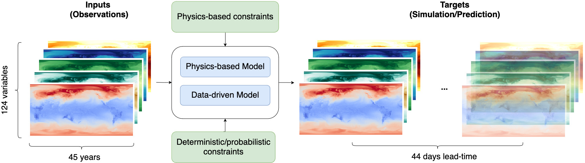

ChaosBench: A Multi-Channel, Physics-Based Benchmark for Subseasonal-to-Seasonal Climate Prediction#
ChaosBench is a benchmark project to improve and extend the predictability range of deep weather emulators to the subseasonal-to-seasonal (S2S) range. Predictability at this scale is more challenging due to its: (1) double sensitivities to intial condition (in weather-scale) and boundary condition (in climate-scale), (2) butterfly effect, and our (3) inherent lack of understanding of physical processes operating at this scale. Thus, given the high socioeconomic stakes for accurate, reliable, and stable S2S forecasts (e.g., for disaster/extremes preparedness), this benchmark is timely for DL-accelerated solutions.
Features#

1️⃣ Diverse Observations. Spanning over 45 years (1979-), we include ERA5/LRA5/ORAS5 reanalysis for a fully-coupled Earth system emulation (atmosphere-terrestrial-sea-ice)
2️⃣ Diverse Baselines. Wide selection of physics-based forecasts from leading national weather agencies in Europe, the UK, America, and Asia
3️⃣ Differentiable Physics Metrics. In addition to deterministic and probabilistic metrics, we introduce two differentiable physics-based metrics to minimize the decay of power spectra at long forecasting horizon (reduce blurriness)
4️⃣ Large-Scale Benchmarking. Systematic large-scale evaluation for state-of-the-art ML-based weather emulators like ViT/ClimaX, PanguWeather, GraphCast, and FourcastNetV2
Getting Started#
Build Your Own Model#
Benchmarking#
Citation#
If you find any of the code and dataset useful, feel free to acknowledge our work through:
@article{nathaniel2024chaosbench,
title={Chaosbench: A multi-channel, physics-based benchmark for subseasonal-to-seasonal climate prediction},
author={Nathaniel, Juan and Qu, Yongquan and Nguyen, Tung and Yu, Sungduk and Busecke, Julius and Grover, Aditya and Gentine, Pierre},
journal={arXiv preprint arXiv:2402.00712},
year={2024}
}